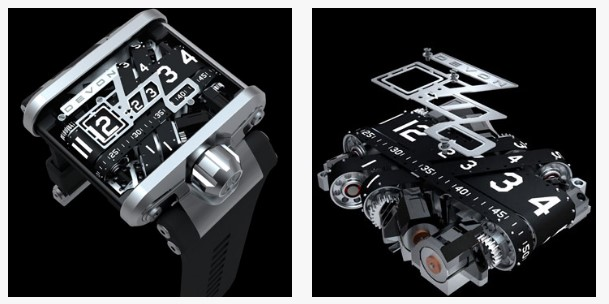
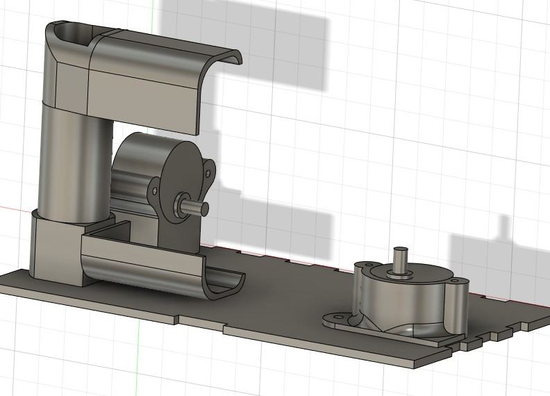

Final Project
Belt-driven Clock
For my final project, i will be making a belt-driven clock. This clock that i will be making is highly inspired by a beltdriven clock created by the company Devon Works.

I started the project by creting a sketech of how I want my clock to look like and the rough dimensions of my clock.
Then, using cardboard, a prototype of my clock is made.
I also wanted my clock to have a lighting system which will can be controlled or acticated when it is dark. So i created a circuit using thinkerCad. Unfortunatly, thinkerCad does not have the stepper motor i am using, so i could not simulate the code on thinkerCad
Here is the bill of materials for the project.(prices change)
Now i can start designing the housing for the clock, i will be desining it in fusion360.
step 1: creating the box
To create the box, I will be using the box with joints that i created in musical box. As i can change the parameters, here i decided to make it a little shoter and taller in height. I then created the front panel for the box which will include a clear acrylic.
step 2: designing the motor and belt holder
To design the motor and belt holder, i created the stepper motor based on the dimensions i found online. I arranged the motor into the position that will move the belt, the holder is then created with the belt system.

step 3: designing the belt puller
this part of the design is more of a trail and error for how many gears i would need. in the end, i ended up with this design.
step 4: Including the other electronics
To check if all the other electronics will fit, i imported the arduino and made a rought version of the stepper motor driver. I also include the holes for the power supply, push button, switch and some vent bars as i feel the stepper motor will get too warm. At this point, I did not realise i missed out on the holes for LDR and arduino board.
step 5: creating the belt
the belt is created by finding the loop lenght around the driver gear and the parts that it will go around.
After finding the loop lenght, The belt can be created with the numbers accordingly.The belt is then cut in half to ensure it will fit on the 3d printer
step 6: laser cutting
the parts that will be laser cut are the box and the front panel acrylic. which will be 7 pieces. To prepare for laser cutting, sketch surface is created on each sides and exported as DXF. All the sides will be cut out from 3mm ply wood except for the front panel which is clear acrylic.
step 7: 3d printing
The motor holder and the belt will be 3d printed. To save time on supports, the motor holder will be printed in sections and then later on joined together.
The belt is also printed at a single layer height and the numbers on the second layer. It is then joined together forming the loop

step 8: arduino cooding
the coding part of this project is the hardest for me as i have little experience with arduino. As arduino is not able to do paralled computing, i cannot use the delay funtion for the clock as other program would not work when the clock is runnning. Thus the "millis" function is used, "millis" is basically the run time of the arduino board. To have a program count in minutes, the current time is set at the start and it will be compared to the run time of the arduino, when difference reached 60000, we know that 1 minute has passed and the motor for the minute is activated. to get the hour, a loop is created counting created counting for the minute funtion to activate 12 times.
For the different mode of the neo pixle, I imported some funtions from the internet and used the led counter i previously made in thinkerCad.
step 9: testing the arduino code
First, i wired up the circuit using the bread board. When it worked, i transfered the circuit into the box and soldered the wires for the ldr, push button, power supply and neopixel. This is also the point where i realise i am missing the holes for the ldr and arduino port, so i just drilled the holes using a hand drill. the circuit works and its ready to proceed to the next step.
step 9: Assemblying everything
The final step is to just put together everything. The box is glued together. I also painted the numbers on the belt as i felt it is hard to see.
copyright © kong qi hao